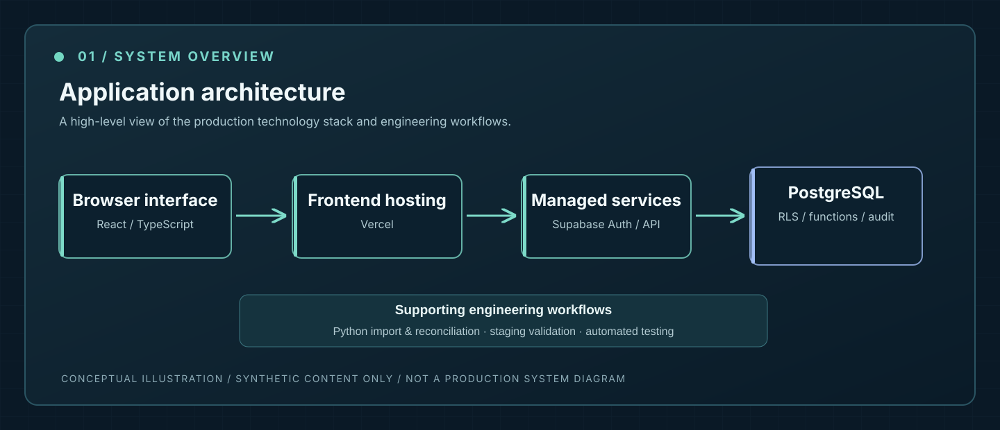
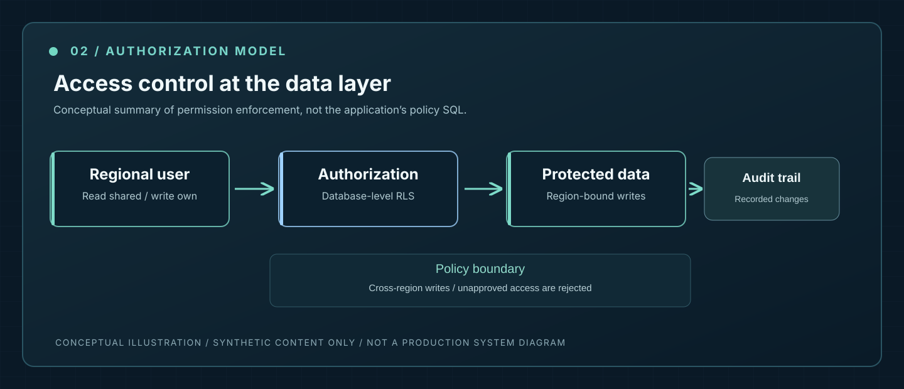
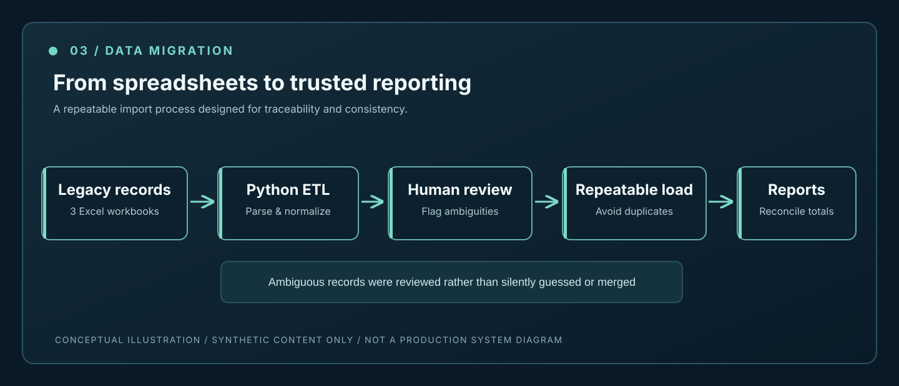

04 / FEATURED CASE STUDY · FALL 2026
NCCA Outreach Management Platform
Replacing fragmented spreadsheets with a secure, production-ready outreach and reporting system.

01 / REAL-WORLD PROBLEM
The challenge
For the National Council on Civil Advocacy (NCCA), outreach reporting lived across three Excel workbooks. One activity could span multiple rows, categories weren't always consistent, and summary formulas sometimes disagreed with the underlying entries. Staff needed reliable national and regional reporting without losing control over who could edit each region's records.
I was the sole developer responsible for turning those workflows into a working application, from requirements and architecture to deployment and follow-up changes.
02 / THE PLATFORM
What I built
- National and regional dashboards with consistent definitions for activity counts, contacts, and reporting metrics.
- Outreach activity and contact workflows, including links between one activity and multiple contacts.
- Hill Day planning, fundraising target tracking, report exports, and administrative review tools.
- An interactive import workflow that flags ambiguous fields and suspected duplicates instead of silently guessing.
03 / APPLICATION SECURITY
Access control beyond the UI
I chose to enforce authorization within PostgreSQL using Supabase Row-Level Security. The system applies region-scoped write permissions at the data layer and uses controlled database functions for privileged changes. Linked records inherit their parent record's permission checks.
To validate the boundaries, the project includes a database authorization test suite that exercises cross-region operations and privilege-change attempts instead of relying only on whether buttons appear in the interface.

04 / DATA ENGINEERING
Migration without guessing
I directed a Python-based migration process that reconstructed multi-row activities and normalized inconsistent spreadsheet values. Loads were repeatable, likely duplicates were flagged for human review, and a reconciliation report compared imported totals with the source workbooks rather than forcing numbers to match.
The migration documented 383 activities, 800 contacts and 320 Hill Day meetings. Those are aggregate counts only; the portfolio contains no organization records.

05 / QUALITY & OPERATIONS
Built, tested, deployed
The frontend uses React and TypeScript, while Supabase provides PostgreSQL, authentication and managed APIs. I managed staging and production releases and reviewed changes against automated checks before deployment.
- 279 passing unit tests reported across forms, imports, permissions and data handling.
- 40+ database authorization checks covering permission boundaries and reporting correctness.
- Playwright browser tests for important workflows and responsive layouts.
Testing figures reflect the October 2026 repository review; they are not claims of exhaustive security verification.
06 / IMPACT & OWNERSHIP
Engineering with real users
The platform replaced the nonprofit's spreadsheet-based workflow and is deployed for organizational use. More than ten staff members use it, based on the organization's reported adoption. Subsequent updates responded to feedback from regional users.
My role: I gathered requirements, made architecture and security decisions, directed implementation, reviewed changes, led testing and data migration, and managed deployment. I used Claude Code as an AI coding agent within a structured workflow of specifications, reviews and verification checks—not as a substitute for technical responsibility.
This case study contains aggregate figures and conceptual diagrams only. No nonprofit records, private source code, credentials, production URLs or internal screenshots are disclosed.